QuickFolders.org
| Home Installation Version History FAQ + Tips Support QuickFolders! Screenshots Bugs + Feature Requests quickFilters Menu On Top |
Screenshots and Procedures
- Main Quickfolders interface
- 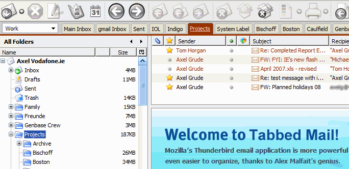
- Moving Mails to a folder
-
- Grab the mail(s) and drop it on the Tab
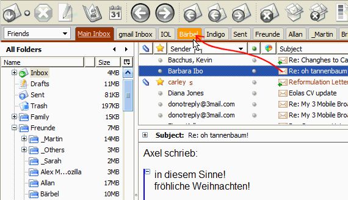
- Grab the mail(s) and drop it on the Tab
- Moving Mail into a Subfolder
-
- Grab the mail(s) and drop it on the Tab representing the parent folder
- If the Folder contains subfolders a menu will drop down
- Drag the Mail onto the menu, the target folder will be highlighted
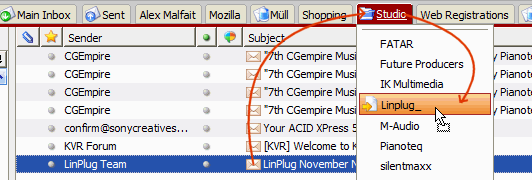
- Creating a new Folder while Moving Mail
-
- Drag the Mail to the tab, then to one of the "New Folder" menuitems at the bottom of the folder list

- When Prompted, enter a name for the new Folder

- The new folder is created instantly, and after a short delay, the emails will be moved to the new folder. Please note that some accounts (e.g. some IMAP servers) do not support creating new subfolders from a mail client.
- Drag the Mail to the tab, then to one of the "New Folder" menuitems at the bottom of the folder list
- Categories Filter
-
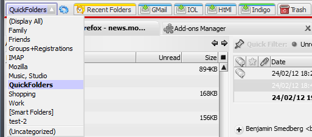

- Creating New Categories
-
In order to create a new category that you can filter your QuickFolder tabs by, follow these simple steps:
- Right click the Tab you want to put into a Category
- From the context menu, select QuickFolders Commands / Set Bookmark Category...
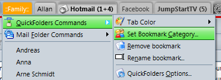 - Under New Category, enter the name and click Add.
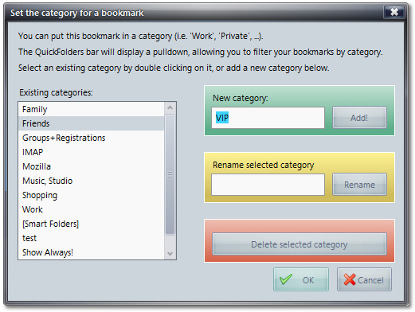 - You can move the tab to a different category later by selecing another one from the list and clicking Ok.
- Current Folder Bar
-
The Current Folders Bar is a navigation helper that simplifies browsing through all folders (including those that are not Tabs in QuickFolders) and gives quick access to the current email (email icon on the left) for dragging it into a different folder, and also the recent folders drop down. It also gives you the most important folder commands such as "Purge Junk" "Empty Trash" "Mark Messages as Read"
It virtually makes reaching over to the folder tree for executing certain commands a thing of the past. And you can do things like pulling an email from friends to friends/Tom or from projects to projects/customer1 in a very quick and simple operation; I put quite a bit of thought into it but it is far from being finished.
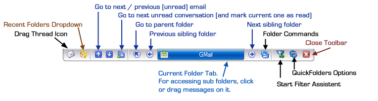The close button in the preview pane removes the Current Folder permanently, this is saved and persisted across separate mail sessions
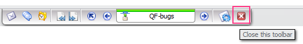If you have want to display it again, use the menu entry from the main QuickFolders context menu:
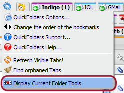 - Multiple Line Toolbar
-
If you have many tabs on the QuickFOlders bar, these wrap to the next line(s)
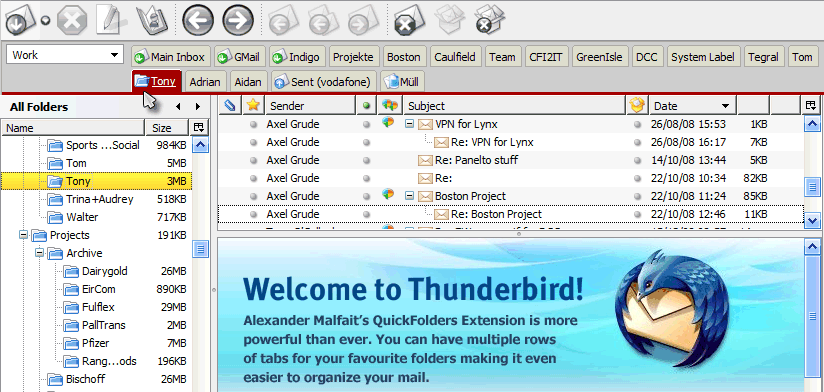 - Reordering Tabs
Method 1
- Simply click a Tab ...
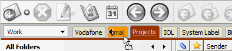 - ... then drag it sideways:

Method 2
You can also use a re-order dialog (this is the older method so we won't add any new features here):
- right-click an empty area on the QuickFolders toolbar to get its context menu.
- Select Change the Order of the bookmarks
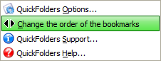 - Use the [Up] and [Down] buttons to reorder items
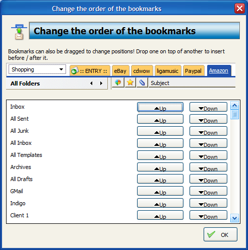
- Simply click a Tab ...
- Filter Teach Mode
-


QuickFolders yet most powerful productivity feature: With the new Filter Teach mode, creating filters becomes as easy as drag + click. Turn on and start dragging your emails into QuickFolders, the wizard takes care of the rest. Here is a detailed explanation.
- Filter List enhancements
-

We added a handy Search Box and Move to Top / Move to Bottom buttons
- General Options
-
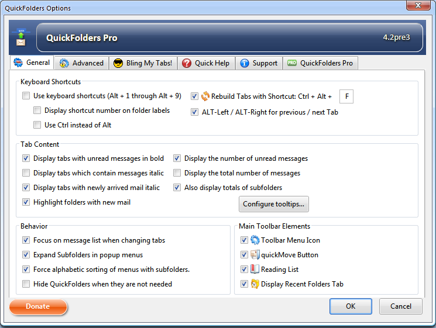
For a detailed description of all options on this page, please got to the QuickFolders Home Page.
- Advanced Options
-
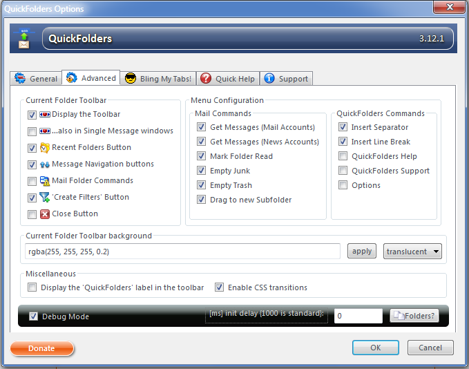
Configure the Current Folder bar and the context menus of the tabs; also miscellaneous other options.
- Layout Options
-
The 'Pimp my Tabs' page in options allows a great amount of flexibility in the styling of the QuickFolders tabs
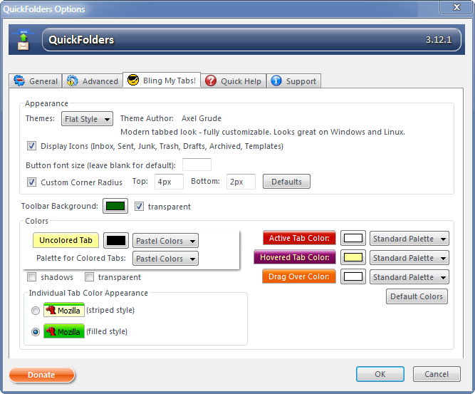
Some Examples for possibe looks
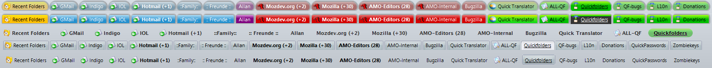 - Quick Help Options
- 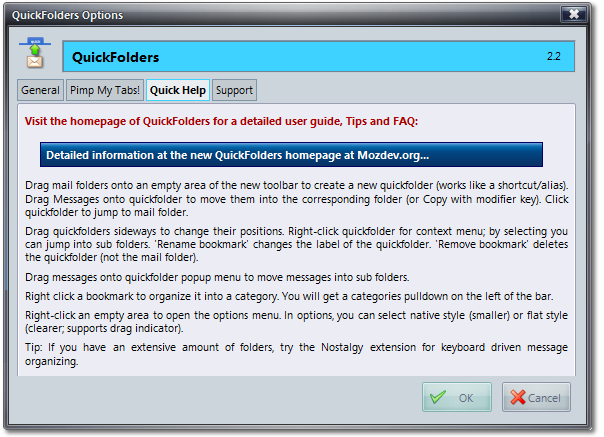
- Support Options
- 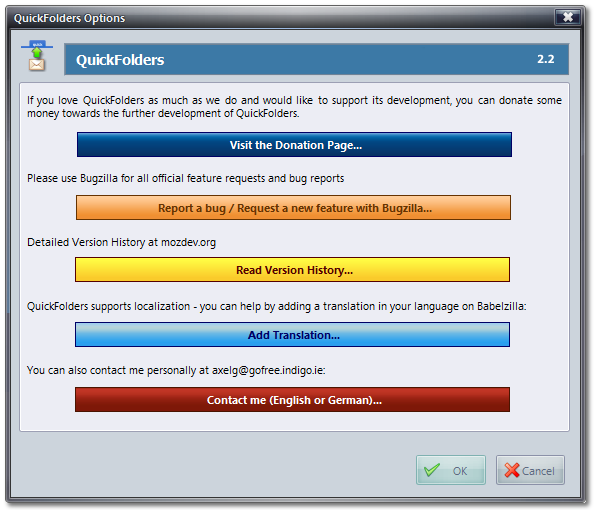